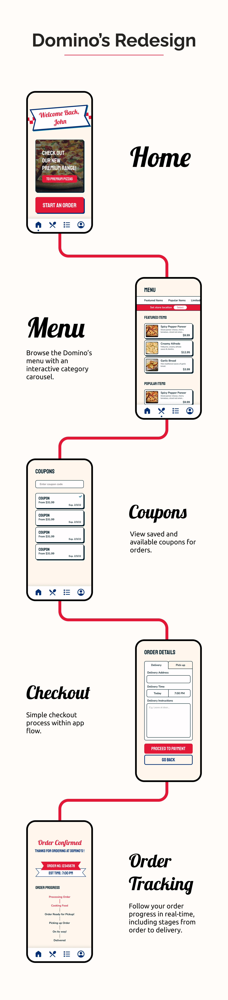

Domino's is an international pizza restaurant chain with multiple locations around metropolitan
areas.
Domino's offers delivery and takeaway options through their app.
Domino's offers many features such as a diverse menu, customizable menu options and frequent meal
deals.
Project
Self–Initiated
Timeline
February 2023 - March 2023
Deliverables
Mobile Application UI
Problem
Domino's' app lacks a clear IA structure, with many menu categories and confusing
navigation. Furthermore UI design choices are inconsistent to the company's branding, offering
a bland and generic appearance instead.
Goal
Reorganize navigation and IA whilst implementing a new and suitable design system.
Create UI with industry-standard methods and practices.
Wireframes
Style Guide
Outcome

Takeaways
This project was a success in allowing me to fully understand Figma's components and variables,
as
well as local styles. Fully incorporating these features into my workflow allows me to familiarize
myself to industry-standards with Figma, having interactive components and using saved color and
text styles for easy styling.
Design-wise this project helped me understand design that does not conform to modern design trends
and styles. Heavily leaning into a retro-restaurant theme heavily depended more on bold and square
features, rather than sleek, minimal interfaces.